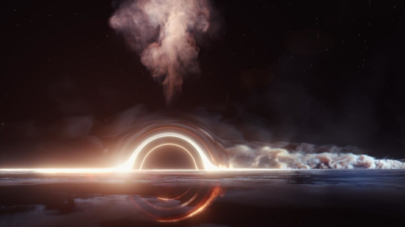

O QUE É UM BURACO NEGRO ?
Buraco negro é uma região do espaço-tempo em que o campo gravitacional é
tão intenso que nada — nenhuma partícula ou radiação eletromagnética como a luz — pode escapar.
A teoria da relatividade geral prevê que uma massa suficientemente compacta pode
deformar o espaço-tempo para formar um buraco negro.
